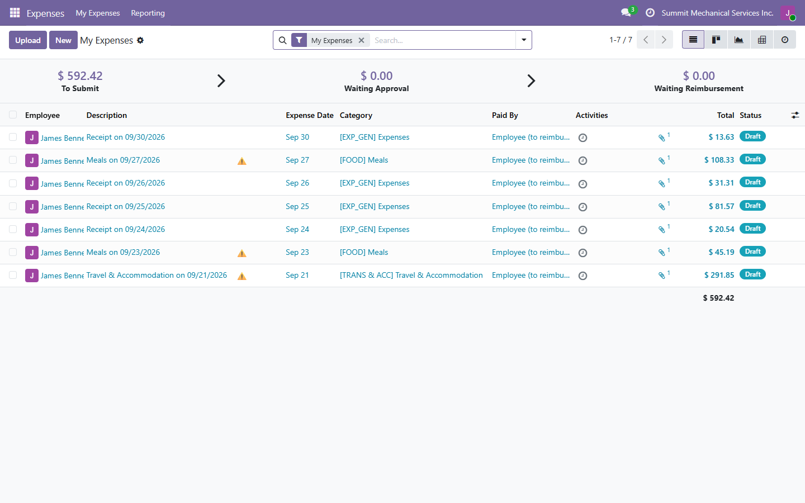
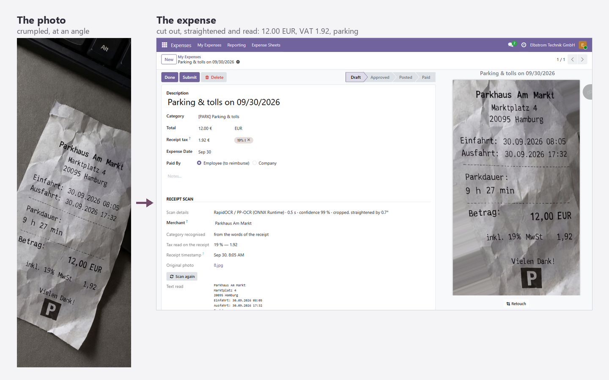
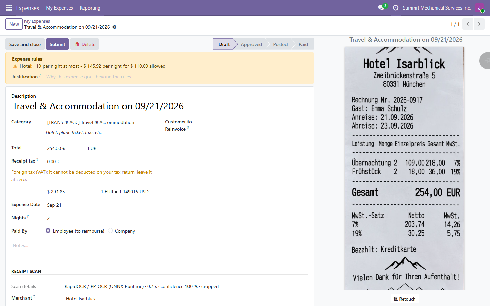
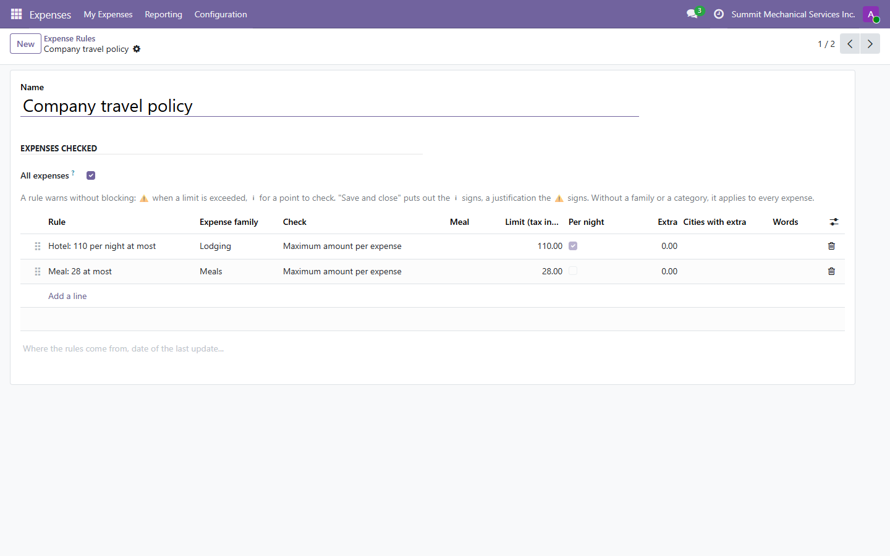
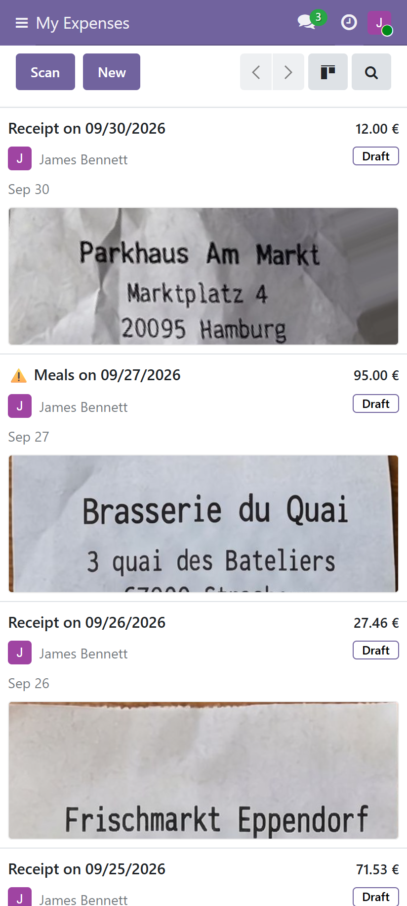
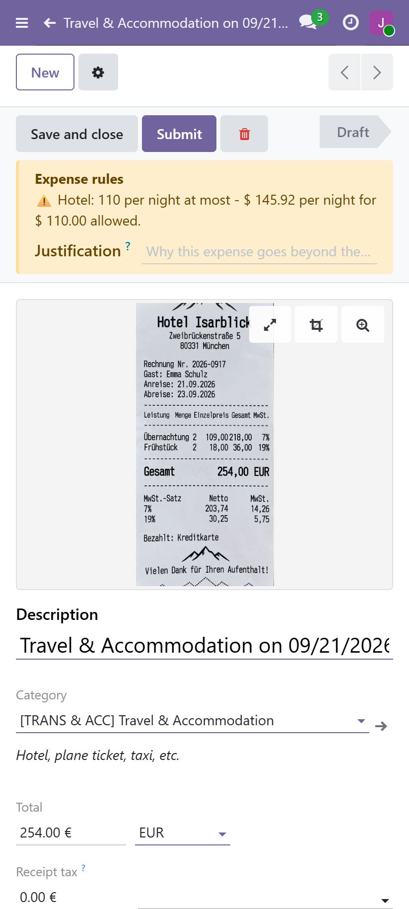
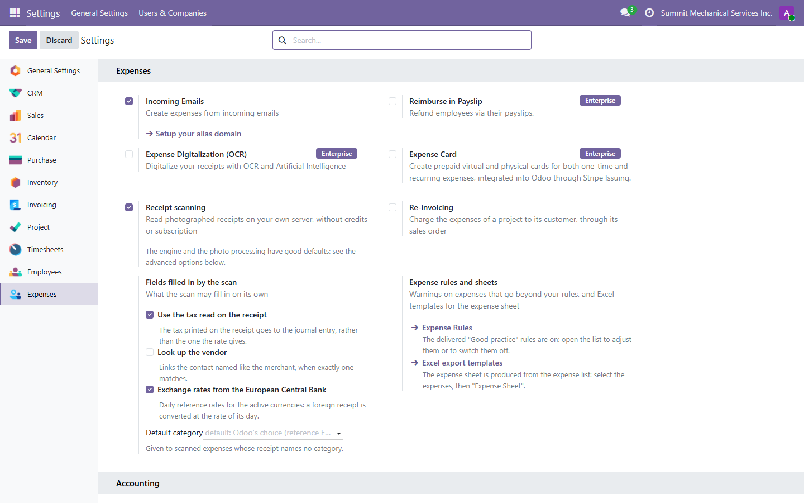
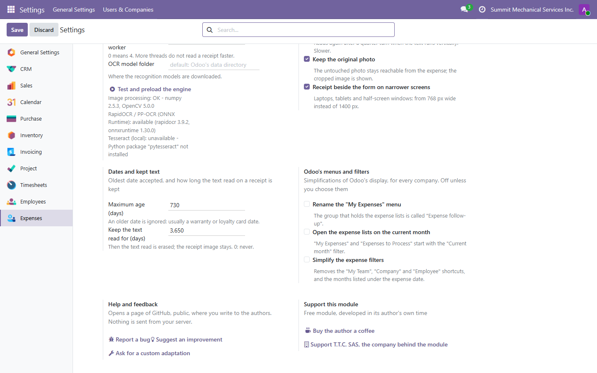

In pictures
Every receipt of a trip, filed and checked

A crumpled ticket, photographed at an angle

Retouch by hand when you want to

Rules that warn without blocking


Foreign receipts, converted at the rate of their day

On a phone


Settings

At the end of the settings, Help and feedback opens a pre-filled page to report a bug, suggest an idea or ask for a custom adaptation. Nothing is sent from your server.
